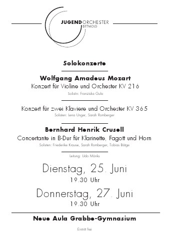
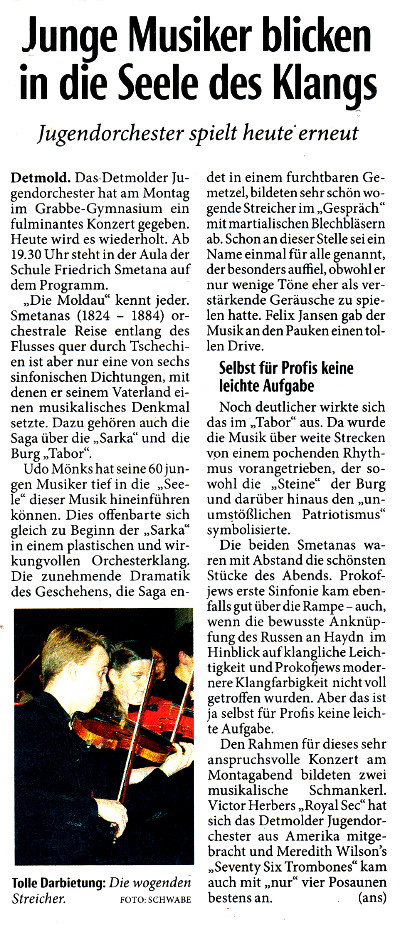
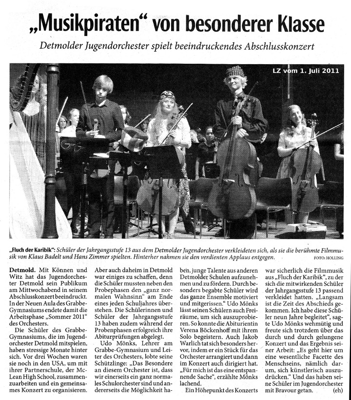
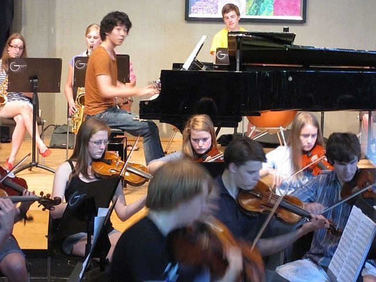

Detmolder Jugend-Orchester

2019
Februar
- zum Videoclip →
- zur Bildergalerie →
- Amerika-Austausch 2019 (neu) →
- LZ-Bericht vom 25. Februar 2019 →

DJO verleiht Flügel
Mit einem breit angelegten Konzert Sponsoren-Geld für den USA-Trip reinholen
Von Hajo Gärtner (Text, Fotos, Videoclip)
 Eigentlich sollte ich nur ein Foto machen. Vom Detmolder Jugendorchester in Aktion, am Konzert-Ende, um die Andacht nicht zu stören. Aber das Ereignis war einfach zu vital, um es bei einem müden Foto zu belassen. Wie will man damit den Applaus des Publikums einfangen, das die Neue Aula komplett füllte ?
Eigentlich sollte ich nur ein Foto machen. Vom Detmolder Jugendorchester in Aktion, am Konzert-Ende, um die Andacht nicht zu stören. Aber das Ereignis war einfach zu vital, um es bei einem müden Foto zu belassen. Wie will man damit den Applaus des Publikums einfangen, das die Neue Aula komplett füllte ?
Das Konzert-Motto erwies sich als trefflich gewählt, weil vieldeutig. Zum einen hilft das Hereinholen von Spendengeld, den Flug über den Atlantik zum befreundeten McLean High School Orchestra zu finanzieren und damit auf den Schwingen des Fliegers ans Ziel zu gelangen; zum anderen beflügelte das breit angelegte Musik-Programm die jungen Musiker zur Himmelsstürmerei.
Denn hinsichtlich des Musikgeschmacks gab's schlicht keine Grenzen. Da brillierten Gina Keiko Friesicke (Violine) und Christian Gassenmeier (Klavier) mit Paganini und Chopin ganz klassisch an ihren Solo-Instrumenten, aber auch die Surpriseguys machten dem Publikum mit einem Mash-Up ihre Aufwartung. Poppig-rockiger Groove, zu dem die Musiker kundig die Instrumente wechselten. Lotte Knappmann etwa bediente Melodica, Gitarre, Keyboard und E-Bass, und die Vocals gingen allen flott von der Lippe. Pharrel Williams sollte die Stimmung beim USA-Trip illustrieren (Happy, 1973), der unverwüstliche Elton John machte mit Your Song seine Aufwartung und das Dschungel-Buch sorgte für den Schuss Wildheit im Menü.
Die Rolle des Schlussläufers im Staffeten-Rennen um das Goldene Kalb übernahm der gewaltige DJO-Klangkörper mit Medleys aus der West-Side-Story, Star Wars und den Pirates of the Caribbean. So etwas zieht immer; die Soundtracks bekannter und beliebter Filme sind in der Regel Ohrwürmer, die sich bis ins limbische System der Zuhörer durchfressen. Vorausgesetzt, sie werden ordentlich flottgemacht. Das ist beim DJO in seiner momentanen Verfassung gar keine Frage. Das Ensemble hat einen Lauf. Alle Zuhörer zeigten sich begeistert, geizten nicht mit Applaus - und spendeten reichlich Scheinchen für die Reisekasse.

2018

 Lust auf Romantik
Lust auf Romantik
Von Florian Wessel
„Oh, wie romantisch!“ so könnte das nächste Programm des Detmolder Jugendorchesters betitelt werden. Seit Beginn des Schuljahrs proben die Musikerinnen und Musiker an dem anspruchsvollen Winterprogramm.
Auf dem Konzertprogramm stehen neben der einleitenden Ouvertüre „Hebriden“ von Felix Mendelssohn-Bartholdy, ein farbenreiches und orchestrales Cellokonzert von Camille Saint-Saëns in a-Moll und die zweisätzige letzte Sinfonie Schuberts, „die Unvollendete“.
Die „Hebriden-Ouvertüre“ schildert in stimmungsvollen Bildern die schottische Landschaft und das Meer. Die Schönheit und Rauheit der schottischen Felsenküste wird lebendig in der Musik Mendelssohn-Bartholdys.
Das Cellokonzert ist trotz seiner scheinbar einsätzig durchkomponierten Anlage ein ausgewachsenes dreisätziges Werk. So folgt der doppelten Exposition mit zwei kontrastierenden Themen ein menuettartiger Teil, der furios in dem Finale endet. Hans von Bülow urteilte über dieses virtuose Cellokonzert, es sei voller „Technik und Eleganz bon sens und Orginalität, Logik und Anmut“. Den Solopart wird die Solocellistin unseres DJO Hanna Bolling übernehmen.
Schuberts „Unvollendete“ ist ein Werk herausragender Schönheit und schwelgt in romantischem, klaren Ton. Es gibt viele Thesen darüber, warum Schubert sie unvollendet gelassen hat. Die plausibelste scheint aber zu sein, dass Schubert nach einem menschlichen Ringen in h-Moll und einem himmlischen Ausklang in E-Dur das Werk als vollkommen ansah.
Mit großem Engagement und teilweise ehrenamtlicher Unterstützung der Mitglieder des Orchesters des Landestheaters Detmold werden die Stimmen gelernt und in Stimm-und Tuttiproben musikalisch erarbeitet.
Die Konzerte finden am Sonntag, den 29.01.2017 und Montag, den 30.01.2017 um 19:30 Uhr in der Neuen Aula statt. Der Eintritt ist frei.
Als lohnender Ausblick sei erwähnt, dass das Detmolder Jugendorchester neben 14 weiteren Ensembles in die Endausscheidung des Orchesterwettbewerbes der Jeunesses musicales 2016/2017 gekommen ist und am 2.7.2017 sein Wettbewerbskonzert „Nordlichter“ spielen wird. Vorbereitet wird dieses Programm unter anderem mit der Orchesterreise nach Washington D.C. und einem Coaching zum Thema „Musikergesundheit“ durch Stephan Berg aus Frankfurt.
2017
Januar
Lust auf Romantik
Von Florian Wessel
„Oh, wie romantisch!“ so könnte das nächste Programm des Detmolder Jugendorchesters betitelt werden. Seit Beginn des Schuljahrs proben die Musikerinnen und Musiker an dem anspruchsvollen Winterprogramm.
Auf dem Konzertprogramm stehen neben der einleitenden Ouvertüre „Hebriden“ von Felix Mendelssohn-Bartholdy, ein farbenreiches und orchestrales Cellokonzert von Camille Saint-Saëns in a-Moll und die zweisätzige letzte Sinfonie Schuberts, „die Unvollendete“.
Die „Hebriden-Ouvertüre“ schildert in stimmungsvollen Bildern die schottische Landschaft und das Meer. Die Schönheit und Rauheit der schottischen Felsenküste wird lebendig in der Musik Mendelssohn-Bartholdys.
Das Cellokonzert ist trotz seiner scheinbar einsätzig durchkomponierten Anlage ein ausgewachsenes dreisätziges Werk. So folgt der doppelten Exposition mit zwei kontrastierenden Themen ein menuettartiger Teil, der furios in dem Finale endet. Hans von Bülow urteilte über dieses virtuose Cellokonzert, es sei voller „Technik und Eleganz bon sens und Orginalität, Logik und Anmut“. Den Solopart wird die Solocellistin unseres DJO Hanna Bolling übernehmen.
Schuberts „Unvollendete“ ist ein Werk herausragender Schönheit und schwelgt in romantischem, klaren Ton. Es gibt viele Thesen darüber, warum Schubert sie unvollendet gelassen hat. Die plausibelste scheint aber zu sein, dass Schubert nach einem menschlichen Ringen in h-Moll und einem himmlischen Ausklang in E-Dur das Werk als vollkommen ansah.
Mit großem Engagement und teilweise ehrenamtlicher Unterstützung der Mitglieder des Orchesters des Landestheaters Detmold werden die Stimmen gelernt und in Stimm-und Tuttiproben musikalisch erarbeitet.
Die Konzerte finden am Sonntag, den 29.01.2017 und Montag, den 30.01.2017 um 19:30 Uhr in der Neuen Aula statt. Der Eintritt ist frei.
Als lohnender Ausblick sei erwähnt, dass das Detmolder Jugendorchester neben 14 weiteren Ensembles in die Endausscheidung des Orchesterwettbewerbes der Jeunesses musicales 2016/2017 gekommen ist und am 2.7.2017 sein Wettbewerbskonzert „Nordlichter“ spielen wird. Vorbereitet wird dieses Programm unter anderem mit der Orchesterreise nach Washington D.C. und einem Coaching zum Thema „Musikergesundheit“ durch Stephan Berg aus Frankfurt.
Juli

Zurück aus Amerika – rein ins Vergnügen
Orchesteraustausch im Einklang trotz politischer Dissonanzen
Von Florian Wessel
Ende Mai sind wir, das Detmolder Jugendorchester, im Rahmen eines schon langjährig bestehenden Orchesteraustausches nach Washington D.C. geflogen. Die 10-tägige Reise, welche uns über den Atlantik auf einen anderen Kontinent führte, wurde durch zahlreiche Proben mit dem MacLean High School Orchestra und „Sightseeing“-Touren sowie viel Zeit mit unseren amerikanischen Freunden gestaltet. Das Ziel unserer Reise war ein erfolgreiches Konzert, welches am Ende unserer intensiven Probenwoche stand.
In der Zeit bis zum Konzert lernten wir unsere amerikanischen Gastfamilien und Freunde kennen, welche wir zum Teil auch schon aus den vorherigen Jahren kannten. In dieser aufregenden, gemeinsamen Woche wurden neue und bestehende Freundschaften geknüpft und gefestigt.
Wir sahen und erlebten in dieser Zeit auch viel der amerikanischen Kultur und des „American Way of Life“. Neben einer Fahrradtour durch Washington D.C. und zahlreichen Museumsbesuchen, wie zum Beispiel der Besichtigung des neu eröffneten „African-American History Museum“, hatten wir auch selber Zeit die Hauptstadt Amerikas näher zu erkunden.
Von einer angespannten Situation, aufgrund des aktuellen deutsch-amerikanischen Verhältnisses, war, mit Ausnahme in der Deutschen Botschaft, nichts zu spüren. Diese besuchten wir am Ende unseres Aufenthalts. Dort wurden uns die Aufgaben der Botschaft erklärt und Fragen beantwortet. Als es jedoch zum heiklen Thema der politischen Beziehungen, sowie dem Thema Einreise kam, wurden wir gefragt, ob nicht das Musizieren der eigentliche Grund unseres Besuches sei und unsere ursprünglichen Fragen blieben im Raum stehen.
Nach dem erfolgreichen Konzert am vorletzten Tag fiel uns der Abschied von unseren Freunden sehr schwer. Trotzdem ging es ein Tag später wieder auf die Rückreise nach Amsterdam und von da aus zurück nach Detmold.
Wir freuen uns schon darauf die Amerikaner im Januar bei Ihrem Gegenbesuch bei uns in Detmold begrüßen zu dürfen.
Wir möchten dem heimischen Publikum jedoch auf keinen Fall das Programm, welches wir in Amerika geprobt und aufgeführt haben, vorenthalten und laden alle aus diesem Grunde sehr herzlich in unsere Konzerte in der Aula des Grabbe Gymnasiums in Detmold am 2. und 3. Juli jeweils um 19:30 Uhr ein. Wir würden uns freuen, Sie begrüßen zu dürfen.
Kreativ-Wettbewerb

»Frozen« als Anregung
DJO in der Endrunde des Deutschen Jugendorchesterpreises
 Detmold. Das Detmolder Jugendorchester ist nominiert für die Endrunde des Deutschen Jugendorchesterpreises der Jeunesses Musicales. Dabei geht’s nicht nur darum, ein tolles Konzert zu spielen und sich mit der rein musikalischen Leistung einen der drei Preise zu sichern. Der Wettbewerb ist vielmehr auf längere Sicht angelegt und will junge Musiker und ihre Orchesterleiter animieren, gemeinsam etwas auf die Beine zu stellen. Die Detmolder Akteure haben sich für ihr Projekt vom Disney-Film »Frozen« inspirieren lassen.
Detmold. Das Detmolder Jugendorchester ist nominiert für die Endrunde des Deutschen Jugendorchesterpreises der Jeunesses Musicales. Dabei geht’s nicht nur darum, ein tolles Konzert zu spielen und sich mit der rein musikalischen Leistung einen der drei Preise zu sichern. Der Wettbewerb ist vielmehr auf längere Sicht angelegt und will junge Musiker und ihre Orchesterleiter animieren, gemeinsam etwas auf die Beine zu stellen. Die Detmolder Akteure haben sich für ihr Projekt vom Disney-Film »Frozen« inspirieren lassen.
Und dafür gibt’s vom Verband Jeunesse Musicales Deutschland Unterstützung in Form eines Workshops. Die Musiker des Detmolder Jugendorchesters sind in ihrer Vorbereitung auf den Wettbewerb von Stefan Berg zum Thema »Gesundes Musizieren« gecoacht worden. »Ein toller Dozent«, berichtet der musikalische Leiter des Detmolder Jugendorchesters, Florian Wessel. Berg habe Violine und Barockvioline studiert und sei seit 2014 wissenschaftlicher Mitarbeiter und Doktorand am Institut für Sportwissenschaft und Motologie der Philipps-Universität Marburg.
Die Detmolder Musiker erfuhren von Stefan Berg viel Wissenswertes um den Aufbau des Bewegungsapparates und die Arbeitsweise des Körpers während des Musizierens – »aber schon bald konnten wir in kleineren Übungen selbst erfahren, wie unser Körper und unser Geist auch in aktiven und passiven Phasen dazulernen können«, berichtet Wessel. Die Instrumentalisten lernten, dass Musizieren mit kognitiven und physischen Anforderungen im Hochleistungssport vergleichbar sei und dass der Körper daher vor jedem Musizieren aufgewärmt werden müsse. »Wir absolvierten ein Warm-Up, und Stefan Berg zeigte uns Übungen, die uns fit machen, die Probe gesund und leistungsfähig zu überstehen«, so der Orchesterleiter.
Qualifiziert hatte sich das Detmolder Jugendorchester für den Wettbewerb bereits zuvor, indem die Akteure ihr Konzept für ihr Konzertprojekt eingereicht hatten. »Nordlichter« ist dieses überschrieben und knüpft an den Disney-Film »Die Eiskönigin – Völlig unverfroren (Frozen)« an. »Die Schüler waren und sind komplett eingebunden in die Kozeption des Programms«, erzählt Florian Wessel.
»Zum Beispiel haben sie Moderationstexte geschrieben, und zwei Schülerinnen werden in den Rollen der Filmfiguren Anna und Elsa durchs Programm führen. Daran arbeiten sie gerade zusammen mit einer Schauspielerin.«
Im Einklang mit dem Motto wird das konzertante Programm nordisch geprägt sein. »Wir spielen auch Titel aus der Filmmusik zu ,Frozen‘, das Gros des Programms wird aber klassisch ausfallen«, sagt Florian Wessel und zählt auf: »Griegs Peer-Gynt-Suite, die Finlandia von Sibelius.« Parallel zu den musikalischen und szenischen Proben arbeite ein weiteres Team gerade an der Bühnen-Deko.
»Letztlich geht es nicht darum, ein Preisgeld zu gewinnen, sondern zu zeigen: Wir sind ein lebendiges Orchester, das gemeinsam etwas schafft«, sagt Florian Wessel. Ein Konzept, das offenbar aufgeht. Schon jetzt hat der Orchesterleiter festgestellt: »Die Schüler sind motivierter und ziehen viel stärker mit als in anderen Arbeitsphasen.«
An deren Ende steht das Kozert. Einer Fachjury der Jeunesse Musicales wird dafür nach Detmold reisen und sich die »Nordlichter« – genau wie die Konzerte der 14 anderen nominierten Orchester – anhören. Die Preise werden für die Gesamtleistung vergeben.
Aufführungen des Programms »Nordlichter« sind am Sonntag, 2. Juli, und am Montag, 3. Juli. Beginn ist jeweils um 19.30 Uhr in der Neuen Aula des Grabbe-Gymnasiums.
veröffentlicht von LZ Online am 24.03.2017 um 08:00 Uhr
* * * * *
Mit Grüßen aus Weikerheim fing alles an!
Von Florian Wessel
Im Rahmen der Wettbewerbsvorbereitung auf den Deutschen Jugendorchesterpreises 2017 der Jeunesses Musicales wurde das Detmolder Jugendorchester von Stefan Berg zum Thema „Gesundes Musizieren“ gecoacht.
Mit einer Videobotschaft und Grüßen aus Weikersheim, dem Stammsitz der Jeunesses Musicales fing alles an. Die Mitglieder des Detmolder Jugendorchesters hatten sich nach einer kurzen Probe im Musikraum versammelt und lauschten aufmerksam den Ausführungen des Coaches Stefan Berg. Vorerst ging es um den Aufbau unseres Bewegungsapparates und die Arbeitsweise unseres Körpers während des Musizierens, aber schon bald konnten wir in kleineren Übungen selbst erfahren, wie unser Körper und unser Geist auch in aktiven und passiven Phasen dazulernen können.
Wir lernten, dass Musizieren mit kognitiven und physischen Anforderungen im Hochleistungssport vergleichbar sei und dass daher vor jedem Musizieren unser Körper aufgewärmt werden müsse. Wir absolvierten ein Warm-Up und Stefan Berg zeigte uns Übungen, die uns fit machen, die Probe gesund und leistungsfähig zu überstehen. Neben dem „Warm-Werden“ erlebten wir, dass es zudem große Freude macht, sich in der Gruppe auf die Probe einzustellen. Auch Elemente des Cool-Down konnten wir selbst erfahren.
Mit Stefan Berg sandte uns die Jeunesses Musicales einen tollen Dozenten. Herr Berg hat Violine und Barockvioline studiert und ist seit 2014 wissenschaftlicher Mitarbeiter und Doktorand am Institut für Sportwissenschaft und Motologie der Philipps-Universität Marburg. Regelmäßig ist er mit der Durchführung gesundheitsfördernder und präventiver Maßnahmen im Rahmen der Präventionsprojekte „Musikergesundheit“ mit den Landesjugendorchestern Mecklenburg-Vorpommern und Sachsen betraut.
Das Detmolder Jugendorchester ist nominiert für die Endrunde des Deutschen Jugendorchesterpreises und wird am Sonntag, den 2.7.2017 um 19:30 in der Neue Aula sein Wettbewerbsprogramm „Nordlichter“ aufführen. Eine weitere Aufführung ist am Montag, dem 3.7.2017 um 19:30 in der Neuen Aula des Grabbe-Gymnasiums.
Das Programm wird sehr nordisch anmuten und zauberhaft eisköniglich…
2016
Sommerkonzert
DJO-Sommerkonzert
Präzision in der Romanze: Mit dieser Überschrift präsentiert LZ-Reporter André Gallisch seinen Bericht über das Sommerkonzert des Detmolder Jugendorchesters. Besonders hebt er Konzertmeister Gereon Mittmann hervor, der es verstanden habe, sein Instrument so gefühlvoll zu spielen, dass es in der gut gefüllten Aula ein Genuss war, ihm zuzuhören. Bei der Wiederholung des Konzertes hat das Grabbe den Titel Musikgymnasium verliehen bekommen.
 mehr => Dienstag, 5. Juli
mehr => Dienstag, 5. Juli
2015
Sommerkonzert

Tolles Abschiedskonzert
Von Melanie Greschke [ Online-Magazin ,,Der Detmolder", 17. Juni 2015 ] und Thorsten Stüker (Fotos)
Detmold. Mit einem gelungenen Konzert mit dem Detmolder Jugendorchster (DJO) verabschiedete sich der langjährige Orchesterleiter und Lehrer des Grabbe-Gymnasiums, Udo Mönks, passend kurz vor den Sommerferien aus dem aktiven Dienst in den wohlverdienten Ruhestand und gab den Taktstock an seinen Nachfolger und Kollegen am Grabbe, Florian Wessel, weiter.
In der nahezu vollbesetzten neuen Aula der Schule eröffneten die jungen Musikerinnen und Musiker des DJO das gestrige Konzert mit einer Toccata und Fuge in d-Moll von Johann Sebastian Bach in dem Arrangement von Leopold Stokowski. Wie es bei den Konzerten unter der Leitung von Mönks seit 2004 bereits Brauch ist, nutzte dieser die Gelegenheit, nach dem ersten musikalischen Beitrag das Wort an das Auditorium zu richten. Dieses Mal nutzte der die Gelegenheit, sich besonders bei jenen Kollegen zu bedanken, die diese, für ihn letzte Orchester-Austauschreise nach Washington (USA) zu einem entspannten Erlebnis gemacht haben. Im Namen des gesamten Orchesters dankte Tilman Coers für gute und stets motivierende Zusammenarbeit bei den zahlreichen Proben und entschuldigte sich mit einem Augenzwinkern für das manchmal etwas laxe Disziplinverständnis des Orchesters bezüglich der Probenanfangszeiten. Im Namen aller Musikerinnen und Musiker dankte er auch für die Gelegenheit, stets so anspruchsvolle und ansprechende Stücke erarbeiten und schließlich aufführen zu können. Schließlich überreichten die Orchestermitglieder ihrem scheidenden Dirigenten jeder eine Sommerblume zum Zeichen der Anerkennung. Nach dem Stück „Jupiter“ aus „Die Planeten“ von Gustav Holst gab es eine musikalische Überraschung: Noch bevor es zur Pause ging, übernahm Florian Wessel kurzzeitig die Bühne und das Orchester. „Wir haben uns lange überlegt, wie wir dir danken können“, richtete Wessel das Wort an Udo Mönks und die Gäste. „Und es war schnell klar, dass dieses nur musikalisch geht“, so Wessel weiter. Also wurde ein Stuhl für Mönks im Zuschauerraum platziert und der „Udo-Mönks-Ehrenchor“ aus Freunden, Kollegen und Schülern zu beiden Seiten des Orchesters auf die Bühne gerufen. Mit einem Sanges-Solo von Wessel wurde Mönks auf seinen Ehrenplatz gerufen und Chor und Orchester würdigten ihn mit dem – textlich angepassten – Schluss-Chorstück aus Mozarts „Zauberflöte“. Bewegt gingen damit alle in die Pause.
Der zweite Teil des Konzerts wurde optisch durch die „Verwandlung“ der Abiturienten des Ensembles aufgepeppt, die als cowboys-boys und cowgirls zurechtgemacht aus der Pause kamen. Nach der Ouvertüre zu „Der Freischütz“ von Carl Maia von Weber spielte das DJO als letztes Stück unter der Leitung von Udo Mönks von George Gershwin nach dem Arrangement von John Whitney „An American in Paris“. Das mitreißende Stück profitierte besonders von der wirklich tollen Leistung von Eike Klein, der die erste Trompete in dem Orchester spielt. Auch die Solo-Passage von Tilman Coers auf dem Cello war sehr gelungen.
Schulleiter Werner Klapproth kam anschließend zu Udo Mönks zur Bühne und wandte sich an seinen langjährigen Kollegen und an das Publikum: „Bevor ich dem wirklich großartigen Orchester danke, danke ich heute in besonderer Weise Herrn Mönks.“ Er betonte, wie bereits Florian Wessel vor ihm, die besonderen Leistungen, die Mönks für die Schule und die Musik nach innen wie auch nach außen erbrachte. Die inzwischen legendären Orchesterfahrten mit dem Orchester der Sekundarstufe I nach Kloster Brunnen hat Udo Mönks ins Leben gerufen. Startete die erste Fahrt noch in einem kleinen Bulli, so macht sich heute jedes Jahr ein großer 60-sitziger Reisebus auf den Weg. Auch die Orchester-Partnerschaft mit dem McLean-Orchester in Washington wurde von Mönks aufgebaut. Als eine besondere Anerkennung seiner geleisteten Arbeit überreichte Klapproth dem verdienten Lehrer die beiden großen Grabbe-Gs, zwei ineinander greifenden, transparenten Steelen, die auch als Grabbepreis verliehen werden.
„Ich freue mich, dass Ihr Nachfolger auch ein richtiger Lehrer bei uns an der Schule ist“, leitete Klapproth zum neuen Leiter des DJO, Florian Wessel, über. „Ihnen ist bewusst, Sie treten in große Fußstapfen, aber Sie haben die richtige Schuhgröße – Sie schaffen das“, so Klapproth zur bevorstehenden Übergabe des Taktstocks durch Udo Mönks an Wessel. „Nimm diesen Stock als Zeichen unseres Vertrauens!“, sagte Mönks bei der Übergabe.
Schwungvoll und voller Elan dirigierte Wessel im Anschluss das Orchester durch die Ouvertüre zu „Orpheus“ von Jacques Offenbach. Mit standing ovations für die beiden Dirigenten und das junge Orchester sowie zwei Zugaben fand das Konzert seinen krönenden Abschluss.

2014
DJO und Grabbe
Wie das Detmolder Jugendorchester mit dem Grabbe-Gymnasium zusammenhängt
Von Udo Mönks
Das Detmolder Jugendorchester (DJO) wurde 1954 durch den Violin-Professor Wilhelm Isselmann und Dr. Friedrich Eberth, damals Musiklehrer der Schule, die später den Namen ,,Grabbe" tragen sollte, ins Leben gerufen. Nach dem Übergang Eberths zur Musikhochschule übernahm Hans Gresser als Musiklehrer und ,,Architekt" des musischen Zweiges 1959 das Ensemble. Mit der Nachfolge durch Joachim Bergmann leitete ab 1984 die dritte Musik-Lehrkraft unserer Schule bis 2004 das Orchester, das als Forum für alle begabten Instrumentalisten Detmolder Schulen fortbesteht. In der Folge der Einführung des Abiturs nach acht Jahren erhöhte sich der Anteil der Grabbe-Schüler. Die übergeordnete Bezeichnung ,,Detmolder Jugendorchester" ist als Tradition erhalten geblieben und wird zusätzlich im Logo als Teil unserer Schule aufgegriffen. Deshalb ist das große Symphonieorchester des Grabbe-Gymnasiums nicht unmittelbar als Teil unserer Schule zu erkennen.
2013
Sommerkonzert

Das Detmolder Jugendorchester hat in diesem Halbjahr an zwei großen Projekten gearbeitet: Der Austausch mit dem Orchester der McLean High School wurde mit der neunten Begegnung in Folge Ende Mai fortgesetzt. Das Konzert in Washington war ein großartiges Erlebnis für alle Beteiligten, und das intensive Zusammenleben mit den Gastgeberfamilien hat wieder sehr enge, freundschaftliche und dauerhafte Kontakte befördert.Die in der kommenden Woche am Dienstag, 25. Juni, und Donnerstag, 27. Juni, jeweils um 19.30 Uhr anstehenden Konzerte stellen die besonderen Begabungen der Abiturienten dieses Doppeljahrgangs in den Mittelpunkt. Franziska Gula vom Leistungskurs Musik wird das Violinkonzert KV 216 von Mozart spielen. Das Konzert für zwei Klaviere und Orchester KV 365 stellt besondere Anforderungen an die Abiturientinnen Lena Unger und Sarah Romberger, und auch die Weite der Bühne in der Neuen Aula des Grabbe-Gymnasiums ist durch die zwei großen Instrumente stark gefordert.
Drei Instrumentalisten setzt der finnische Komponist Berhard Henrik Crusell in seinem Concertino für Klarinette, Fagott und Waldhorn ein. Mit Friederike Krause, Klarinette, Sarah Romberger an ihrem ,,Zweitinstrument" Fagott und Tobias Bätge am Waldhorn finden sich überaus begabte Jugendliche zusammen.
Umrahmt werden die Solokonzerte von der Ouvertüre zur Mozart-Oper ,,Die Zauberflöte" und einem Medley aus STAR WARS.
Es spielt das Detmolder Jugendorchester, Leitung Udo Mönks. Der Eintritt ist frei.
Winterkonzert

2012
<div
Arche_Noah
- Bildergalerie von Fabian Schwarze =>
- LZ-Bericht vom 1. Oktober 2012 =>
- Videoclip von Walter Hunger =>
Videoclip_2
LZ-Rezension

Sommerkonzert-Trailer
Programm
Das Programm teilt sich in einen ernsteren ersten Teil mit der „heimlichen“ Nationalhymne Finlandia von Jean Sibelius sowie dem Konzert für Flöte und Orchester d-Moll des Frühromantikers Franz Danzi. Die Solistin ist Lea Polanski, Jungstudierende an der hiesigen Musikhochschule und Abiturientin dieses Jahrgangs.
Der zweite Teil wird locker und beschwingt: Walzer von Paul Lincke und Johann Strauß, der Radetzky-Marsch von Johann Strauß Vater zum Mitklatschen und die schönsten Melodien aus dem Musical CHICAGO versprechen angenehme Unterhaltung.
2011
The Typewriter
Das Video ist bei YouTube nicht gelistet. Es kann nur auf der Grabbe-Homepage gesehen werden und von den Freunden, die den Link kennen. hjg
Schottische Fantasie
Das Video ist bei YouTube nicht gelistet. Es kann nur auf der Grabbe-Homepage gesehen werden und von den Freunden, die den Link kennen. hjg
Musikpiraten

2010
- Plakat zum Sommerkonzert =>
- vertonte Bildergalerie von Probe und Konzert =>
- LZ-Rezension vom 24. Juni 2010 =>

Ein Überflieger am Klavier
Zwei glanzvolle Juni-Konzerte in der Neuen Aula: opulente Werke von Wagner und Gershwin
Von Hajo Gärtner
LZ-Rezensent Andreas Schwabe attestiert den Musikern eine reife Leistung: ,,Detmolder Jugendorchester meistert anspruchsvolles Programm", titelt er in der Unterzeile der Überschrift. Hauptzeile: ,,Ein Überflieger am Klavier". Gemeint ist Soohong Park, der nicht nur ,,diesen vertrackten Triller'' hinbekommen hat, sondern auch ,,die brillanten Kaskaden, die rhythmischen Raffinessen und kreuzweise übereinander her springenden Hände'', das Ganze im ,,dichten Dialog mit dem Orchester".
Auf dem Programm stand die Rhapsodie in Blue, jenes ,,Bravourstück, mit dem George Gershwin den Jazz im Konzertsaal etabliert hat". Eine Komposition, die dem Komponisten alles abverlange. Soohong Park hat alles gegeben und das Konzertpublikum in Begeisterung versetzt.
Nicht nur er. Schwabe hebt auch Daniel ,,Klarinette" Romberger hervor, ,,mit jener frischen Phrasierung, die jeden Zuhörer sofort für das Kommende einnimmt".
Ein Rezensent muss natürlich immer auch einen kritischen Aspekt finden und benennen: Christina Petersen habe sich ,,nicht ganz so eindrucksvoll in Szene setzen" können, weil ,,das Orchester sie häufig etwas zudeckte". Nichtsdestotrotz spiele sie eine ,,tolle Viola", wie die Zugabe bewiesen habe.
Schwabes Abschlussurteil: ,,Das Orchester konnte die vielen Talente in seinen Reihen in den ganz schön schweren Polowetzer Tänzen von Alexander Borodin besonders schön ins Rampenlicht stellen."
2009
Zwei Events im Januar
- zur Bildergalerie =>
- zum Videoclip mit Tigran Kharatyan: Das fetzt! =>
- zum Videoclip mit Annika Treutler: Das rockt! =>

Grabbe Stars
- Plakat zum Konzert des Mendelssohn Quartetts =>
- Plakat zu den beiden DJO-Konzerten =>
- Programmheft zu den beiden DJO-Konzerten =>
Anfang Januar gibts am Grabbe-Gymnasium gleich zwei schöne und anspruchsvolle Konzerte, teilt Orchesterleiter Udo Mönks mit.
Das Mendelssohn Quartett Leipzig gastiert am Freitag, 9. Januar, um 19.30 Uhr in unserer Neuen Aula. Mitbegründer und "Primarius" ist Gunnar Harms, der den älteren KollegInnen sicher noch bekannt ist. Sein Weg hat ihn ins Gewandhausorchester Leipzig geführt, ein hoch angesehenes Ensemble.
Das Jugendorchester bereitet sich ebenfalls auf zwei Konzerte gleich zum Wiederbeginn der Schule im neuen Jahr vor. Mönks: ,,Wir haben in diesem Abi-Jahrgang mehrere sehr talentierte Musiker, die sich je mit einem Solo-Konzert verabschieden. Tigran Kharatyan spielt das Konzert für Violine und Orchester von Jean Sibelius. Annika Treutler (studiert inzwischen in Rostock) kehrt an ihre alte Schule in ihren Jahrgang zurück mit dem Konzert für Klavier und Orchester von Dimitri Schostakowitsch. Zu diesem Konzert hat der Komponist eine ebenfalls konzertierende Trompetenstimme hinzugefügt, die Markus Tappe (12) tragen wird."
Videoclip
|
|
Videoclip_2
|
|
Konzert im Juni

Die Hebriden
Das Detmolder Jugendorchester veranstaltet am Sonntag und Montag, 21./22. Juni, ein Konzert mit Werken von Felix Mendelssohn-Bartholdy (,,Die Hebriden"), Alexandre Tansman
(,,Concertino pour clarinette et orchestre") und Georges Bizet (Nr. 1 C-Dur). Als Solist tritt Benedikt Brenk an. Die Konzerte beginnen am Sonntag um 11.30 Uhr, am Montag um 19.30 Uhr in der Neuen Aula des Grabbe-Gymnasiums. Die Fotos sind bei den Proben entstanden.
Weihnachtskonzert
Vom Himmel hoch
Von Udo Mönks
Einstimmung auf Weihnachten: Am Dienstag und Mittwoch, 1. und 2. Dezember, geben Chor SII und unser Jugendorchester das Weihnachtskonzert 2009. Die Konzerte beginnen jeweils um 19.30 Uhr in der Erlöserkirche am Markt.
Das Jugendorchester eröffnet mit einer Weihnachtsouvertüre über ,,Vom Himmel hoch" von Otto Nicolai, in der der Komponist alle Register des Orchesters einsetzt um seine Weihnachtsfreude zu formulieren.
Festlicher Glanz wird auch verbreitet durch eine ,,Sonate à otto Viole con una Tromba" (Konzert für Trompete und zwei Streicherchöre) von Alessandro Stradella. Markus Tappe (Jg 13) spielt die Solo-Trompete.
Chor und Orchester finden sich zu zwei Werken zusammen:
Im ,,Magnificat" von Dietrich Buxtehude, einem Komponisten, den J. S. Bach sehr geschätzt hat, bildet der Bibeltext aus dem Lukas-Evangelium die Grundlage der Komposition.
,,Der Stern von Bethlehem" ist durch Josef Gabriel Rheinberger im Jahre 1891 vertont worden. Seine Frau, Franziska von Hoffnaaß, gestaltet in ihrem Text eine sehr ,,romantische" Betrachtung des Weihnachtsfestes. Sie stellt den biblischen Text zusammen mit freien Überlegungen und anrührenden Betrachtungen. Ihr Mann setzt das volle spätromantische Sinfonieorchester ein und malt damit die schönsten Klangfarben.
Wir laden herzlich ein, an diesen Abenden die Hektik von Schule zu vergessen und die Schönheiten der Musik in feierlicher Umgebung zu genießen.
2008
Sommerzeit
- Videoclip eines vibrierenden Momentes =>
- Plakat zu den Konzerten am 15. und 16. Juni
- Programmheft: Außenseite
- Programmheft: Innenseite
Samba statt Wald und Jagd
Detmolder Hornistin Victoria Duffin verleiht
dem Konzert des Jugendorchesters einen ganz besonderen Glanz
Von Andreas Schwabe
Wer weiß schon, dass das Horn nicht nur nach Wald und Jagd klingt, sondern richtig singen, ja Samba tanzen kann? Jan Koetsier (1911 - 2006) weiß das. Der niederländische Komponist hat dem Horn ein kleines Konzert geschrieben, in dessen zweiten Satz dieses wegen seiner Klangfarbe durchaus respektierte, aber ansonsten stiefmütterlich behandelte Instrument richtig „singen“ und im dritten Satz richtig „tanzen“ muss. Und auch sonst kann im Hinblick auf die spieltechnischen und musikalischen Anforderungen an das Horn in diesem Werk mitnichten nur von einem „kleinen“ Konzert die Rede sein. Schließlich hat der Komponist das Werk dem Hornvirtuosen Hermann Baumann gewidmet. Victoria Duffin hat nicht ohne Grund einen ersten Preis auf Bundesebene von „Jugend musiziert“ gewonnen und schon mit 12 Jahren im Landesjugendorchester mitgespielt. Sie ist heute auch Mitglied des Bundesjugendorchesters und Stipendiatin der Jürgen-Ponto-Stiftung. Sie wusste auch am Sonntag und Montag in der Aula des Grabbe-Gymnasiums ihre Zuhörer zu begeistern. Ebenso das Detmolder Jugendorchester, dessen Leiter Udo Mönks seinen Streichersatz ganz besonders gut zu einem homogenen Klangkörper zusammengeschweißt hatte. Schon der Einstieg in das mit zwei Stunden Musik recht lange Konzert gelang prächtig. Voller Frische und mit schönen Schwung flanierte das Jugendorchester durch die zwischen Flöten und Streichern hin und her wehenden Farben in der d-moll-Sinfonie von Alessandro Scarlatti. An diesen überaus schönen ersten Teil konnten die jungen Leute nach der Pause nicht mehr so ganz anknüpfen. Tschaikowskis musikalischer Ausflug nach Italien verlangte eine immense Spannung, um die kontrastreiche Heiterkeit der Musik wirklich hörbar zu machen. Und um „Sgt. Pepper’s Lonely Hearts Club Band“ als sinfonisches Event auftreten zu lassen, hätten die Arrangements eigentlich mehr Pep gebraucht. Dabei hat das Orchester aus dem, was der Arrangeur aufgeschrieben hat, noch viel herausgeholt. Prompt löste auch dieses Stück bei den Zuhörern helle Begeisterung aus, so dass das Orchester nicht ohne Zugabe von der Bühne runter kam.
vibrierender Moment
|
|
Paulus

Foto: Franz-Nevermann
Die wundersame Wandlung
Detmold (Nv). Freundlicher Beifall am Anfang, stehende Ovationen am Ende - das Jugendorchester und den Chören des Grabe-Gymnasiums gelang am Samstagabend in der Christuskirche eine ebenso perfekte wie ergreifende Wiedergabe des Oratoriums "Paulus" von Felix Mendelssohn-Bartholdy.
Mit seinen Oratorien unternahm Felix Mendelssohn-Bartholdy den erfolgreichen Versuch, den protestantischen Gemeindechoral in die Form des Händel'schen Vorbilds zu integrieren. "Paulus" entstand sieben Jahre, nachdem der Komponist die Matthäus-Passion von Johann Sebastian Bach dem Vergessen entrissen hatte. Und so ist auch der Einfluss dieses Großmeisters unverkennbar. Das gilt für die der Besinnung dienenden Choräle, für den Einsatz des Chors als Vertreter verschiedener Bevölkerungsgruppen und für die oft erzählende und kommentierende Rolle des Vokalsolisten, aber auch für instrumentale Zwischenspiele.
Das Oratorium beginnt mit der Steinigung des Stephanus und einem Jüngling, der "Wohlgefallen an seinem Tode hat". Der Weg dieses Saulus zum Paulus, vom fanatischen Eiferer zum demütigen Gottesdiener, wird in dramatischen Auseinandersetzungen mit den Vertretern anderer Religionen und in einer fast transzendent wirkenden Bekehrungsszene aufgezeigt. Dabei werden Passagen aus dem Alten Testament ebenso verwendet wie Texte aus der Apostelgeschichte, den Briefen des Paulus und der Offenbarung des Johannes. Mit hoch konzentriertem Einsatz und überragender Disziplin überzeugten das von Udo Mönks einstudierte Jugendorchester und die von Hanna Sentker geleiteten Chöre des Grabbe gleichermaßen. Respektable Leistungen boten unter anderem die den Aufruhr der Eiferer gestaltenden Streicher, die Flöten der anbetenden Heiden und die samtenen Celli, die eine Tenor-Kavatine untermalten. Der verschlungene und verflochtene Eingangschor gelang ebenso vorzüglich wie die triumphalen Aufbrüche und die eher lyrisch betonten, nachdenklich einhaltenden Szenen.
Vier bemerkenswerte Vokalsolisten konnten für die Aufführung gewonnen werden. Bernadette Schäfer setzte die Strahlkraft ihres Soprans unter anderem in einer beängstigend gegenwärtigen Klage über Jerusalem ein, Luise Höcker (Alt) bot sanften Trost. Bohyeon Mun lieh seinen Tenor dem Erzähler und verschiedenen biblischen Gestalten. Der Bass Wolfgang Treutler überzeugte mit einer ebenso anrührenden wie ausdrucksvollen Gestaltung der Titelfigur. Wunderbar gelang ihm und allen Beteiligten die ergreifende Abschiedsszene des "Paulus", der sich von Ephesus aus in eine ungewisse Zukunft einschifft.
Videoclip vom Paulus-Oratorium
Bewertung des Clips
Wie ist der Clip gemacht?
Paulus_im anderen Format
2007: Doppel-Orchester
Doppelt genäht hält besser


Das Plakat

Das Programm
Die Abfolge
Johann Christian Bach (1735 – 1782)
Sinfonia für Doppel-Orchester
Op. 18 Nr. 3
Camille Saint-Saëns (1835 – 1921)
Concerto pour Violoncelle et Orchestre
No. 1 en la mineur Op. 33
Solist: Nico Treutler
Pause
Felix Mendelssohn Bartholdy (1809 – 1847)
Ouvertüre zum Oratorium Paulus
Op. 36
George Gershwin (1898 - 1937)
An American in Paris
Suite Arr.: John Whitney
Claude Michel Schönberg (* 1944)
Selections from LES MISÉRABLES
Arr.: Bob Lowden
Erläuterungen
Johann Christian Bach, der jüngste und in der zweiten Hälfte des 18. Jahrhunderts berühmteste Bach-Sohn, wird auch der „Mailänder“ oder „Londoner“ Bach genannt. In seinen Werken wird zunehmend seine Bedeutung als Meister des „galanten Stils“ erkannt, der mit seiner Vereinigung von italienischen und deutschen Form- und Ausdruckselementen der Klassik die Wege gebahnt und vor allen Dingen den „cantablen“ Stil seines großen Verehrers Mozart vorbereitet hat.
Die D-Dur - Sinfonia für Doppelorchester stammt aus den Jahren 1774 – 77 und zeigt besonders im langsamen Satz den ganzen Zauber seiner süßen italienischen Melodik, gepaart mit deutscher Gemütstiefe (Fritz Stein, im Vorwort der Peters-Partitur).
Das außerordentliche musikalische Talent des französischen Pianisten, Organisten, Musikpädagogen und Komponisten Camille Saint-Saëns wurde früh entdeckt und gefördert. Nach Musikstudium und Organistentätigkeiten in Paris widmete er sich ab 1865 hauptsächlich der Komposition und der Lehre. Motiviert durch den deutsch-französischen Krieg setzte sich Saint-Saëns für eine nationale französische Musik ein.
Dieser Gesinnung entsprang im Jahr 1872 auch das Konzert für Violoncello und Orchester Nr. 1 a-Moll op. 33. Es verabschiedet sich von der traditionellen Form des mehr- bzw. dreisätzigen Solokonzertes. Der Komponist schuf vielmehr ein Werk aus einem Guss, das lediglich durch neue Themeneinsätze oder andere Tempobezeichnungen gegliedert wird. Die häufig wechselnde Aufgabenverteilung zwischen dem Solisten und dem Orchester zieht sich durch das gesamte Konzert.
Auch die Regeln der Sonatenhauptsatzform, die bis zur Romantik im Allgemeinen dem Kopfsatz zu Grunde liegen, werden freier behandelt. Die Exposition wird vom Solocello mit dem Hauptthema eröffnet. Das Orchester, zu Anfang klar in begleitender Funktion, folgt dann ebenfalls mit dem Hauptthema, während das Solocello in den Hintergrund rückt. Danach kann es aber im lyrisch klagenden Seitenthema wieder seine klanglichen Möglichkeiten entfalten.
Ein tänzerischer, aber verhalten schwebender zweiter großer Abschnitt des Konzertes tritt an die Stelle eines langsamen Satzes. Nach einer Wiederaufnahme des ersten Hauptthemas entwickelt sich der sehr kontrastreiche dritte Abschnitt. Ruhige expressive Melodien wechseln sich hier mit forschen Fanfarenklängen und raschen Sechzehntelketten ab, bevor ein kurzer, völlig neuartiger Teil in A-Dur das Konzert wie ein „Rausschmeißer“ beschließt.
Nico Treutler
Der 1988 in Bielefeld geborene Nico Treutler erhielt mit knapp 6 Jahren seinen ersten Cellounterricht bei Claus Hütterott in Paderborn. Bei zahlreichen Teilnahmen am Wettbewerb Jugend musiziert zwischen 1998 und 2003 errang er 1. Preise auf Landes- und Bundesebene. Seit Herbst 2001 unterrichtet ihn Prof. Tilmann Wick, der an der Hochschule für Musik und Theater Hannover lehrt. Dort wurde Nico Treutler zum Wintersemester 2005/2006 als Jungstudent aufgenommen. Den Cellisten des Detmolder Jugendorchesters gehört Nico Treutler seit 7 Jahren an, seit 2005 auch als Stimmführer. Außerdem nahm er regelmäßig bei der Kammermusikveranstaltung Serenata Grabbiana teil.
Gern macht das Jugendorchester auf seine neue CD aufmerksam.
Im Foyer kann sie erworben werden.
Eingespielte Werke: Das Concertino für zwei Hörner und großes Orchester von Friedrich Kuhlau mit den Solisten Victoria und Carsten Duffin war Teil des Programms im März, die Sinfonia für acht obligate Pauken und Orchester von Johann Fischer mit Manuel Westermann an den Solo-Instrumenten im Juni 2005. Der Huldigungsmarsch aus „Sigurd Jorsalfar“ von Edvard Grieg erklang im Konzert Anfang 2006 gemeinsam mit dem Orchester der McLean High School.
Wir wünschen Ihnen viel Vergnügen!
Schon seit über zehn Jahren existiert der Orchesteraustausch des Detmolder Jugendorchesters (DJO) mit dem Orchester der McLean High School (MHSO )in einem Vorort von Washington, DC. Gerade haben wir vom 24. Mai bis 02. Juni unsere Partner wieder besucht und nach gemeinsamen Proben ein interessantes und an Abwechslung reiches Programm aufgeführt, in das auch der dortige Schulchor eingebunden war. Einen Teil des „amerikanisch bunten“ Programms bietet das DJO nach der Pause.
Die enge Folge von Besuch und Gegenbesuch wird im Januar 2008 fortgesetzt, wenn das MHSO nach Detmold kommt. So ist ein intensives Kennenlernen der Jugendlichen möglich, das einen regen Gedankenaustausch und echte Freundschaften zur Folge hat.
Das Jugendorchester wird unterstützt von
BRUDERHILFE-PAX-FAMILIENFÜRSORGE.
Presse-Echo
Cellist ist die treibende Kraft:
Von Nico Treutler wird
man noch hören

Von Andreas Schwabe (Text/Foto)
Detmold. Wenn einer eine Reise tut, dann kann er was erzählen, heißt es. Das Detmolder Jugendorchester präsentierte jetzt in zwei Konzerten seine ganz eigene Auslegung dieser Weisheit. Es erzählte nicht, es musizierte - und zwar in Hochform. Und es präsentierte mit Nico Treutler einen in den eigenen Reihen groß gewordenen Solisten, von dem man noch hören wird.
Die Reise ging in die USA, genauer gesagt, in die Nähe von Washington zur Partnerschule des Grabbe-Gymnasiums (die LZ berichtete). Zum dritten Mal kamen Schülerinnen und Schüler beider Schulen zusammen, um in diesem Jahr dort - im nächsten Jahr werden die Amis wieder hier sein - gemeinsam ein Konzert vorzubereiten und zu spielen. Klar, dass nach so intensiven zehn Tagen der Klang eines Orchesters enorm zusammenwächst. Vor einer Woche kamen die Jugendlichen wieder zurück, um jetzt im eigenen Konzertsaal den Funken auf ein jeweils erfreulich zahlreiches Publikum überspringen zu lassen und darüber hinaus im ersten Cellokonzert von Camille Saint-Saens reichlich Luft aus der Welt großen Musizierens zu schnuppern.
Nico Treutler wurde zur treibenden Kraft auf der Reise in dieses Wunderland der Musik. Im Grabbe-Gymnasium groß geworden, hat er so sich so in das Cellospiel vertieft, dass die beiden zu einer begeisternden Einheit zusammengewachsen sind. Insbesondere sein jetziger Lehrer Professor Tillmann Wieck hat dem Jungstudenten Türen geöffnet, die erstaunliche weitere Wege sichtbar werden lassen. Treutlers Ton hat ungemein an kerniger Ausstrahlung und fesselnder Intensität gewonnen. Er vermag schon spieltechnisch höchste Ansprüche nicht nur zu meistern, sondern organisch in ein musikalisches Geschehen einzubetten.
Und das auch in großer Achtsamkeit für seinen musikalischen Partner, das Detmolder Jugendorchester, das in diesem Konzert geradezu über sich hinaus gewachsen ist. Udo Mönks hat seine jungen Musiker - der nicht nur hier brillant aufspielende Konzertmeister Michael Ziethen ist gerade mal 16 Jahre alt und sei einmal stellvertretend für die vielen anderen herausragenden Musiker genannt (Flöte und Horn etwa) - zu einem differenziert und einfühlsam mitgehenden Klangkörper zusammengeschlossen. Auch wenn rhythmisch klatschende Hände und trommelnde Füße den Solisten vehement zur Zugabe baten, in der Treutler mit einem atemberaubend gespielten ersten Satz aus Hindemiths Solo-Sonate noch mal eins drauf setzte. Der Beifall galt auch dem tollen Orchester.
Die Reise ging nach Amerika und prompt wartete das Programm mit einer Zusammenstellung auf, die im alten Europa auch heute noch so manche Stirn in Falten legt. In Amerika wird es kein Problem gewesen sein, Mendelssohns Ouvertüre zu seinem "Paulus" - diese tief berührende Orchestrierung des "Wachet auf ruft uns die Stimme" - in einem Atemzug mit einem Potpourri der bekanntesten Melodien aus dem Musical "Les Miserables" zu spielen. Dort ist die Empfindung des musikalisch Schönen lange nicht mehr so mit der des Guten und Wahren verknüpft wie noch hierzulande.
Ungeachtet dieser Tatsache ist dem Orchester nicht nur für diese beiden Stücke eine ganz ausgezeichnete Darstellung zu bescheinigen, auch wenn man sich so manche Musicalmelodie mit mehr Mut zur Sentimentalität hätte vorstellen können. Auch Gershwins mit vielen rhythmischen Fallstricken aufwartenden "Amerikaner in Paris" geriet ebenso zu einem echten Hörvergnügen wie die galant den Abend eröffnende Sinfonia für Doppelorchester von Johann Christian Bach.
2006: Smetana
- Bericht von Lisa Korte =>
- Bericht in der LZ =>
- hier ist sie: die Bildergalerie =>
- Video: Impressionen (6,5 MB) =>
- Video: Powerplay (extra lang) =>
- Audio: wunderbarer Harfenklang (Stream) =>
- Audio: Harfe plus Sinfonie-Orchester (Stream) =>

Spektakulär beginnt der erste Satz „Vysehrad“ mit einem ausgedehnten Harfen-Solo. Nach alter Sage sitzt der Dichter Lumir hoch über der Moldau auf dem Felsen Vysehrad bei Prag, und singt zur Harfe: Von der geheimnisvollen, untergegangenen Burg Vysehrad, von der Geschichte und den Mythen Böhmens.
Nach der „Moldau“ malt der Satz „Aus Böhmens Hain und Flur“ in weiten Zügen die Gedanken und Gefühle, die den Betrachter beim Anblick der böhmischen Landschaft erfassen. Aus dem weiten Umkreis dringt inniger Gesang zu seinen Ohren, alle Haine und die ganze blühende Flur singen ihre Weisen, fröhliche und traurige. Sie alle kommen zu Wort, die tiefen, dunklen Wälder - in den Solopartien der Hörner - und die sonnigen fruchtbaren Tiefebenen der Elbe und andere Teile des reichen, schönen Landes Böhmen. Ein Satz voller „schöner“ Passagen, der den Solisten des Orchesters einen breiten Raum gibt.
Es folgt “Tabor“: Das ist die feste Burg, von den Hussiten gegründet, zu Schutz und Trutz der kriegerischen Scharen. "Wer da ist ein Gotteskämpfer" tönt der düstere Choral, der die Streiter entflammt, aber Grauen verbreitet in den Reihen der Feinde. Es ist die Zeit böhmischer Kraft und Größe.
Ebenfalls auf eine Sage greift der letzte Satz zurück: Die Heiden der Hussitenzeit ruhen im Berge Blanik. Hirten weiden auf seinem Abhange ihre Herden. Unheil kommt über das Land. Da steigen die Ritter herauf, bringen Sieg und Rettung. Und in neuem Glanze strahlt der Ruhm des Böhmerlandes.
So endet der Zyklus „Mein Vaterland“ in einem jubelnden Tutti-Finale.
Smetana - ein Leben und Sterben für die Musik
Friedrich Smetana,
* 2. März 1824 in Leitomischl,
† 12. Mai 1884 in Prag
Seit 1843 widmete sich Smetana ganz
der Musik. Da die Prager Verhältnisse
damals künstlerisch wie politisch zu
eng für seine Ansichten und Pläne
waren, gelang ihm weder sein
Vorhaben, ein Symphonieorchester,
noch später einen Musikverein zu
gründen. Gern nahm er daher ein
Angebot an, nach Göteborg als
Musikdirektor zu gehen.
Diese Stellung, die er im Herbst 1856
antrat, gab ihm reichlich Gelegenheit,
Erfahrungen als Chor- und Orchester-
Dirigent zu sammeln. Die Zeit, die er
dort verbrachte, war in materieller
Hinsicht die Glanzperiode seines
Lebens. Die Milderung des österreichischen
Regimes in Böhmen nach dem
Kaiserdiplom (1860) gab Smetanas
Leben eine entscheidende Wendung.
Sein nationales Bewusstsein, das
infolge der deutschen Schulbildung
und des überwiegend deutschen
Umgangskreises, in dem er bisher
gelebt hatte, einigermaßen eingeschlummert
war, flammte auf.
Smetana entschied sich, von nun an
alle seine Kräfte ausschließlich der
tschechischen Nation zu widmen. Zur
Rückkehr nach Böhmen lockte ihn
besonders die bevorstehende
Eröffnung des selbstständigen tschechischen
Theaters (1862).
In Prag scheiterten vorläufig seine
Hoffnungen auf eine Kapellmeister-
Stelle beim Theater, doch entfaltete
Smetana eine große kulturpolitische
Aktivität. Sein Hauptinteresse galt dem
Ziel, eine national geprägte tschechische,
besonders dramatische Musik
zu schaffen. Der Erfolg seiner ersten
Opern (darunter Die Verkaufte Braut)
war entscheidend für sein Engagement
als 1.Theaterkapellmeister
(1866). Während der acht Jahre, in
denen er diese Stelle bekleidete, konnte
er seine Pläne verwirklichen. Im
Repertoire nahm er besonders auf die
einheimische Produktion Rücksicht.
Auch Werke des damals noch wenig
bekannten Dvorak kamen hier zur
Geltung.
Seit Juli 1874 zeigten sich bei ihm
Gehörstrübungen, die sich vereinzelt
bereits um 1860 gemeldet hatten. In
der Nacht des 20. Okt. 1874 trat völlige
Taubheit ein. In der Folge litt er
zusätzlich unter großer wirtschaftlicher
Not. Smetana, der lange die Hoffnung
auf Genesung von seiner Krankheit
nicht aufgab, suchte vergeblich ärztliche
Hilfe bei Spezialisten.
Trotz seines schweren Schicksals
erlahmte er nicht in seiner schöpferischen
Tätigkeit: Er begann nun mit der
Verwirklichung seines großen symphonischen
Zyklus, dessen Konzeption
eng mit den letzten Szenen seiner
Oper Libuse zusammenhängt. Die
Entstehung der ersten Teile, Vysehrad
und Vltava (Die Moldau), fällt in die
Zeit von Smetanas Katastrophe (Sept.
bis Dez. 1874). Im nächsten Jahre
schrieb er Sárka und Zceskych
luhua háju (Aus Böhmens Hain und
Fluren), und erst um die Jahreswende.
I. Vysehrad
Die Harfe des Sängers Lumir erklang
auf dem stolzen Vysehrad, dem Sitze
der böhmischen Fürsten und Könige.
Die Burg erstrahlte in Ruhm und Glanz.
Wilde Kämpfe kamen und rissen die
Pracht des Vysehrad in den Untergang.
Wie ein Echo ertönt über ihm
der längst verklungene Gesang Lumirs.
II. Vltava
Zunächst belauscht diese Komposition
die beiden Quellen, die sogenannte
"warme" und die "kalte"
Moldau, die im Schatten des Böhmerwaldes
entspringen. Ihre lustig dahinrauschenden
Wellen vereinigen sich
und erglänzen in den Strahlen der
Morgensonne.
Der Waldbach wird zum Fluß Moldau,
der auf seinem Weg durch die böhmische
Landschaft zu einem gewaltigen
Strom anwächst. Er fließt durch dichte
Waldungen, in denen das fröhliche
Treiben einer Jagd hörbar wird.
Er fließt durch Wiesen und Haine, wo
unter lustigen Klängen ein Hochzeitsfest
mit Gesang und Tanz gefeiert wird.
In der Nacht tanzen die Wald- und
Wassernymphen beim silbernen
Mondschein auf den glänzenden
Wellen ihre Reigen. Stolze Burgen,
Schlösser und ehrwürdige Ruinen als
Zeugen vergangener Herrlichkeit ziehen
vorüber.
1878/79 entstanden die letzten
Dichtungen, Tábor und Blaník, die
das Ganze zum einheitlichen Zyklus
vollendeten; bei der Drucklegung
erhielt dieser den definitiven Titel
Má vlast (Mein Vaterland).
Smetana erfreute sich immer steigender
Anerkennung der Öffentlichkeit:
100. Reprise der Verkauften Braut am
5. Mai 1882, erste Gesamtaufführung
des Zyklus Má vlast am 5. Nov. 1882.
Zunehmend musste er gesundheitlich
mit Halluzinationen und Ohrensausen,
Folgen seiner Krankheit, kämpfen, die
sich im Laufe des nächsten Jahres
unerträglich steigerten. Ende April
1884 musste er in die Prager Anstalt
für Geisteskranke überführt werden, in
der er bald darauf entschlief.
Der Strom braust und tost in den
Katarakten von St. Johannes. Mit
Gewalt und schäumenden Wellen
bahnt er sich den Weg durch die
Felsenspalte in das breite Flußbett, in
welchem er mit majestätischer Ruhe
weiter gen Prag dahinfließt, begrüßt
vom altehrwürdigen Vysehrad, bis er
schließlich in weiter Ferne den Augen
des Dichters entschwindet und sich in
die Elbe ergießt.
IV. Aus Böhmens Hain und Flur
Dieses symphonische Gedicht malt in
weiten Zügen die Gedanken und
Gefühle, die uns beim Anblick der
böhmischen Landschaft erfassen. Aus
dem weiten Umkreis dringt inniger
Gesang zu unseren Ohren, alle Haine
und die ganze blühende Flur singen
ihre Weisen, fröhliche und traurige. Sie
alle kommen zu Wort, die tiefen, dunklen
Wälder - in den Solopartien der
Hörner - und die sonnigen fruchtbaren
Tiefebenen der Elbe und andere Teile
des reichen, schönen Landes
Böhmen. Ein jeder kann dieser
Komposition die Erinnerung an das
entnehmen, was er ins Herz geschlossen
hat. Der Dichter hat freien Weg, er
braucht sich nur an die Einzelheiten
der Komposition zu halten.
Das Detmolder Jugendorchester wird unterstützt von:
V. Tábor
Das ist die feste Burg, von den
Hussiten gegründet, zu Schutz und
Trotz der kriegerischen Scharen. "Wer
da ist ein Gotteskämpfer" tönt der
düstere Choral, der die Streiter entflammt,
aber Grauen verbreitet in den
Reihen der Feinde. Es ist die Zeit
böhmischer Kraft und Größe.
VI. Blanik:
Die Heiden der Hussitenzeit ruhen im
Berge Blanik. Hirten weiden auf seinem
Abhange ihre Herden. Unheil
kommt über das Land. Da steigen die
Ritter herauf, bringen Sieg und
Rettung. Und in neuem Glanze strahlt
der Ruhm des Böhmerlandes.
Nach: Europäisches Musikfest der
Internationalen Bachakademie, Stuttgart
(12.9.1993)
Rezension
Mehr als nur die Moldau
Detmolder Jugendorchester (DJO) präsentiert Smetanas "Mein Vaterland"
Von Lisa Korte
Langsam entspringt sie aus einer kalten und einer warmen Quelle im Schatten des Böhmerwaldes. "Die Moldau" ist wohl am meisten bekannt, doch auch die restlichen Sätze von Friedrich Smetanas "Mein Vaterland" dürfen nicht unterschätzt werden. Das Detmolder Jugendorchester (DJO) präsentierte zwei Mal "Mein Vaterland" in der neuen Aula und sorgte so für viel Applaus.
"Es ging uns darum, auch einmal die weniger bekannten Sätze aus 'Mein Vaterland' in ein Konzert zu bringen. 'Die Moldau' steht in vielen Schulen auf dem Lehrplan, die anderen Sätze jedoch geraten leicht in Vergessenheit", erklärte DJO-Leiter Udo Mönks die Motivation. 65 Orchestermitglieder studierten seit dem neuen Schuljahr das gesamte Konzertprogramm ein.
Dabei konnten die Zuschauer in der gut gefüllten Aula eine virtuelle und genussreiche Wanderung durch Böhmen unternehmen.
Im ersten Satz ("Vysehrad") war besonders die Harfe wichtig, die Hanna Rabe spielte. Sie erklang auf dem Sitz des böhmischen Fürsten und Königs. Gleich danach bahnte sich die bekannte Moldau ("Vltava") ihren Weg durch die böhmische Natur. Die Besucher hörten jedoch nicht nur das Wasser, sondern auch die übrige Umwelt mit einer Jagd, einem Hochzeitsfest oder die tanzenden Wald- und Wassernymphen. Die anfänglich kleine sprudelnde Quelle wird im Laufe der Zeit zu vielen schäumenden Wellen, die sich ihren eigenen Weg durch das Flussbett suchen. Erst am Ende dieses Satzes entschwindet die Moldau völlig und ergießt sich in die Elbe.
Der vierte Satz ("Aus Böhmens Hain und Flur")beschäftigt sich mit der wunderschönen Natur Böhmens, der fünfte Satz ("Tábor") mit der böhmischen Kraft und Größe und der sechste Satz (Blanik) mit Böhmens Rettung uns seinem Erstrahlen im neuen Glanz.
"Natürlich kann man die Qualität eines Konzertes nicht mit einer CD-Aufnahme vergleichen", erklärte Udo Mönks. Dennoch sah er durchaus Vorteile in einem Konzert: "Die Begeisterung, der Schwung und die Stimmung kommen so einfach viel besser herüber!"
Am Ende dankte er den Musiklehrern für ihre Mithilfe und vor allem dem gesamten Detmolder Jugendorchester für ihre Leistungen. Die Zuschauer waren begeistert von dem Konzert der Extraklasse.
Der vierte Satz ("Aus Böhmens Hain und Flur") beschäftigt sich mit der wunderschönen Natur Böhmens, der fünfte Satz ("Tábor") mit der böhmischen Kraft und Größe und der sechste Satz (Blanik) mit Böhmens Rettung uns seinem Erstrahlen im neuen Glanz.
"Natürlich kann man die Qualität eines Konzertes nicht mit einer CD-Aufnahme vergleichen", erklärte Udo Mönks. Dennoch sah er durchaus Vorteile in einem Konzert: "Die Begeisterung, der Schwung und die Stimmung kommen so einfach viel besser herüber!"
Am Ende dankte er den Musiklehrern für ihre Mithilfe und vor allem dem gesamten Detmolder Jugendorchester für ihre Leistungen. Die Zuschauer waren begeistert von dem Konzert der Extraklasse.
Bericht in der LZ
Musikalische Wanderung durch Böhmen
Ruhm, Stolz und Glanz: Detmolder Jugendorchester
überzeugt mit der "Moldau"
Detmold (cd). "Ich wünsche Ihnen eine genussreiche Wanderung durch Böhmen", so begrüßte Schulleiter Walter Hunger das Publikum zum Konzert des Detmolder Jugendorchesters im Grabbe-Gymnasium. Gespielt wurde "Die Moldau" von Friedrich Smetana. Eine Komposition, die zum Mitwandern einlud, wurde sie doch meisterhaft und facettenreich von dem Orchester interpretiert.
"Die Moldau" ist das wohl berühmteste Werk aus Friedrich Smetanas Komposition "Mein Vaterland". Der tschechische Musiker folgte dem Ziel, eine national geprägte tschechische, besonders dramatische Musik zu schaffen, wie es im Programm des Orchesterkonzertes heißt.
Dem Jugendorchester gelang es, genau diese dramatische Seite der Komposition zum Vorschein zu bringen. Ruhm, Stolz und Glanz sind Schlagworte, die dieses Tongemälde prägen, und die die jungen Musiker zur Entfaltung brachten.
Auf diese Weise nahmen sie die interessiert lauschenden Eltern, Lehrer und viele andere Musikliebhaber mit auf eine Reise durch Böhmen und erzählten anhand des symphonischen Zyklus' Geschichten über wilde Kämpfe, stolze Burgen und herrliche Landschaften.
So konnte schon zu Beginn die Harfe Raum schaffen für prachtvolle Klänge. "Vysehrad" berichtet von einer Prager Burg; einem Ort, der von Ruhm und Untergang zeugt.
Die Spannung dieser Geschichte vermochten vor allem die Geigen ausdrucksstark wiederzugeben: Das Spiel um Sieg und Niedergang wurde dann und wann musikalisch hinausgezögert. Derartige Gegensätze waren auch zu hören in den übrigen Teilen des Konzertes.
Pompöse wie zarte, gesangliche Partien machten die Musik aus. Das Orchester schaffte es aber durchaus, diese Charakteristika durch fließende Übergänge zu kombinieren. Dramatisch und doch poetisch-friedlich gaben sie die Geschichte der Moldau wieder: Der Satz "Vltava" ("Die Moldau") beschreibt, wie sich die "warme" und die "kalte" Quelle der Moldau vereinigen.
Dass das Proben einer solch facettenreichen Komposition viel Arbeit bedeutet, wissen vor allem die Musiker selbst. Benedikt Brenk (Klarinette) und Maximilian Weiß (Geige) sind seit etwa zwei bis drei Jahren dabei. Für sie ist die Musik ein Hobby. Viele der anderen Orchestermitglieder, 15 bis 16 Jahre alt, haben allerdings durchaus vor, Musik zu studieren. Leiter Udo Mönks motivierte alle jungen Leute dazu, ein solches Hobby in Angriff zu nehmen. Vor allem das Fagott sei ein Instrument, das bisher noch der Minderheit angehöre. So betonte Mönks: "Wer Fagott spielt, wird sicher nicht arbeitslos."
Feuerwerksmusik

Das Programm
Gioacchino Rossini (1792 – 1868)
Le Rendez-vous de Chasse
Georg Friedrich Händel (1685 – 1759)
Feuerwerksmusik
Ouvertüre – Bourree – La Paix – La Rejouissance – Menuett I – Menuett II
Pause
Franz Danzi (1763 – 1826)
Concertante für Flöte, Klarinette und Orchester op. 41
Flöte: Charlotte Rewitzer Klarinette: Astrid Niebuhr
Klaus Badelt
Pirates of the Caribbean
John Williams
Star Wars: The Empire Strikes Back
Ltg: Udo Mönks
Über die Komponisten
Rossinis Name steht allgemein für erfolgreiche Opern von "Der Barbier von Sevilla" (Rom 1816) bis "Wilhelm Tell" (Paris 1829). Seine Gelegenheitskomposition Le Rendez-vous de Chasse, eine Fanfare für vier Hörner, ist bearbeitet worden und schildert so musikalisch das Treffen zweier Jagdhorn-Gruppen im Wald.
Im Jahre 1749 feierte man in London das Ende des österreichischen Erbfolgekrieges, in den auch England verwickelt gewesen war. König Georg II. ordnete eine festliche Musik mit Feuerwerk an und beauftragte Händel mit der Komposition. Auf Anordnung des Königs durften jedoch keine Streicher eingesetzt werden. So kam es, dass Händel am Tag des Festes ein streicherloses Mammutensemble mit mindestens hundertzwölf Mitwirkenden dirigierte - darunter allein vierzig Trompeten und zwanzig Hörner. Die heute erklingende Fassung fällt bescheidener aus. Wir danken den Gasttrompetern (Eltern von Grabbe-Kindern) für ihren selbstlosen Einsatz.
Franz Danzi, geboren in der damaligen Musikmetropole Mannheim, wurde schon in jungen Jahren in seinem Talent gefördert und erhielt Unterricht z.B. bei dem berühmten "Abbé" Vogler. Das Konzert für Flöte, Klarinette und Orchester steht in der Mannheimer Tradition und nutzt geschickt die verschiedenen Register der Soloinstrumente. Besondere klangliche Effekte gelingen Danzi im langsamen zweiten Satz.
Das Genre Fimmusik existiert kaum 100 Jahre und führt sein Leben überwiegend im Verborgenen. Einige Titelmusiken jedoch setzen sich in den Ohren der Filmbetrachter fest, bekommen ein eigenes Leben, gewinnen Oskars und erobern Spitzenplätze.
Der deutsche Komponist Klaus Badelt arbeitet international erfolgreich mit namhaften Produzenten ( u.a. Steven Spielberg) und landete mit der Musik zu Pirates of the Caribbean (dt Fluch der Karibik) einen echten "Hit".
John Williams komponierte die Musik zu den sechs Teilen Star Wars und hält dadurch musikalisch die seit 1977 gedrehten Folgen zusammen.
Die Mitwirkenden
Gern macht das Jugendorchester auf seine neue CD aufmerksam. Im Foyer kann sie erworben werden.
Eingespielte Werke: Das Concertino für zwei Hörner und großes Orchester von Friedrich Kuhlau mit den Solisten Victoria und Carsten Duffin war Teil des Programms im März, die Sinfonia für acht obligate Pauken und Orchester von Johann Fischer mit Manuel Westermann an den Solo-Instrumenten im Juni 2005. Der Huldigungsmarsch aus „Sigurd Jorsalfar“ von Edvard Grieg erklang im Konzert Anfang 2006 gemeinsam mit dem Orchester der McLean High School.
Wir wünschen Ihnen viel Vergnügen!
Schon seit über zehn Jahren existiert der Orchesteraustausch des Detmolder Jugendorchesters (DJO) mit dem Orchester der McLean High School in einem Vorort von Washington, DC. Die Reise des DJO in die USA vom 12. bis 20. Mai 2005 gelang wegen der allgemein bekannten Veruntreuung des Geldes durch den Leiter des betreuenden Reisebüros nur durch die großzügige Hilfe von verschiedenen Seiten. Nach dem Gegenbesuch des amerikanischen Orchesters soll die Reihe der gegenseitigen Besuche im Sommer 2007 in den USA fortgesetzt werden.
Die Solistinnen des Konzertes, Charlotte Rewitzer und Astrid Niebuhr, haben sich in ihrer Schulzeit in verschiedenen Ensembles des Grabbe-Gymnasiums verdienstvoll engagiert. Neben ihnen verabschiedet das Jugendorchester weitere Abiturienten, die über lange Jahre in wesentlichen Positionen Verantwortung übernommen haben:
Dagmar Bathmann (Vc), Carsten Duffin (Cor), Ruth Engel (Vl), Caroline Falk (Vl),
Hendrik Müller (Kb), Magnus Schröder (Pos), Benjamin Warlich (Vl),
Eva Maria Weiß (Fg), Teresa Westermann (Vla).
 Das Jugendorchester wird unterstützt von
Das Jugendorchester wird unterstützt von
BRUDERHILFE-PAX-FAMILIENFÜRSORGE.
Doppelt genäht hält besser
Von Hajo Gärtner (Text) und Lisa Korte (Fotos/Film)
Udo Mönks stellte es in einer kurzen Ansprache klar: Es gehe nicht darum, Geld zu beschaffen. Die jungen Musiker des Detmolder Jugendorchesters hätten ihre Konzert-Offensive vielmehr aus Freude an der Musik gestartet und um ihrem Publikum einen Hörgenuss zu verschaffen. Wenn dabei auch noch ein bischen Geld herausspringt, um die Schulden im Gefolge der doppelt bezahlten Flugtickets nach Amerika zu begleichen, dann sei das dem Orchester aber durchaus recht. Und so boten sie ihrem durchaus großen Publikum in zwei Heimspielen eine grandiose Aufführung. Weil doppelt genäht besser hält. So konnten sich DJO-Freunde und Fans der klassischen Musik ein Bild davon machen, wie der Klangkörper in Amerika (McLean High School) gewirkt haben muss, denn die dort aufgeführten Werke standen auch in der Neuen Aula mit ihrer tollen Akustik auf dem Programm. Rund 600 Zuhörer kamen zu den beiden Konzerten, sparten nicht am Zwischenapplaus und belohnten die Akteure am Ende mit einem ausgedehnten Abschlussapplaus. Das Jugendorchester kam nicht ohne Zugabe aus der Neuen Aula heraus und legte einmal den Kaiserwalzer, dann die ,,Cadenza für 6 Pauken" von Peter Sadlo oben drauf. Wie ein Fels in der Brandung stand Manuel Westermann an seinem Trommel-Ensemble: Die Geigen gaben den Ton an, Manuel Westermann den Rhythmus. Begeisterung lösten seine Alleingänge aus: zum Beispiel ,,O when the saints go marching on" auf Trommeln. Das marschierte! Aber auch alle anderen Akteure standen dem an Enthusiasmus nicht nach und zeigten perfektes Zusammenspiel: So war die Aula erfüllt vom homogenen Klangbild eines starken Klangkörpers.
Wenn Westermann aufspielte, dann war auch immer ein zweiter Mann im Spiel: Musikhochschulstudent Viacheslav Zaharov wechselte sich mit Orchesterleiter Udo Mönks am Taktstock ab.
Das Plakat

Anmerkungen
Sinfonie für acht obligate Pauken
Von Udo Mönks
Die zwei Pauken des klassischen Sinfonieorchesters, der Militärmusik entstammend und dort zu Pferde gespielt, sind im 18. Jh. in der Regel in Tonika- bzw. Dominant-Stimmung eingesetzt und werden zusammen mit den Bläsern für besondere klangliche Effekte herangezogen. Die Pauken besitzen somit harmonische Aufgaben.
Um ein Instrumentalkonzert gestalten zu können, müssen die „melodischen“ Möglich-keiten wesentlich erweitert werden. Der Komponist Johann Carl Christian Fischer erreicht mit acht Pauken im Stimmumfang einer Oktave eine Balance zwischen Melodik und technischer Realisierbarkeit. Gemeinsam mit den Oboen oder auch solistisch, sogar mit einer eigenen Kadenz, setzt Fischer die Pauke als Melodieinstrument ein.
Das Konzert eröffnet ein locker gefügter Moderato-Konzertsatz. Ein kurzes Adagio leitet in das Schlussrondo mit gegensätzlichen Abschnitten über.
Der Komponist der vorliegenden „Sinfonia“ konnte erst vor wenigen Jahren weitgehend zweifelsfrei zugeordnet werden. Das Material wurde freundlicherweise von der Landesbibliothek in Schwerin zur Verfügung gestellt.
Dass eine Aufführung mit acht Pauken selten ist, liegt wohl an der Kostenfrage, bedenkt man den Preis einer Konzertpauke. Wir danken der Hochschule für Musik, dass uns die Instrumente zur Verfügung gestellt wurden.
Schuberts "Tragische"
Wie bei seinen drei ersten Sinfonien weiß man auch bei Schuberts in den Jahren 1816-1818 entstandenen Sinfonien 4, 5 und 6 kaum etwas über ihre Entstehung. Skizzen oder Entwürfe zu diesen Werken sind nicht überliefert. Ebenso im Dunkel bleiben der genaue Anlass der Entstehung, sowie Ort und Datum der ersten Aufführung. Schubert datierte die Fertigstellung dieser Sinfonie auf den 27. April 1816 und fügte den Zusatz «Tragische» eigenhändig hinzu. Erst am 19. November 1849, also über 20 Jahre nach seinem Tod, wurde das Werk in der Leipziger Buchhändlerbörse unter der Leitung von Ferdinand Riccius das erste Mal öffentlich aufgeführt. Der Erstdruck der frühen Sinfonien Schuberts entstand unter der redaktionellen Aufsicht von Johannes Brahms im Jahr 1884.
Ihrer Form nach folgt die vierte Sinfonie den klassischen Mustern Haydns und Mozarts. So beginnt der erste Satz mit einer langsamen Einleitung, auf deren schwermütigen Charakter sich der Titel des Werkes beziehen könnte. Die Einleitung kommt mit einem zentralen musikalischen Gedanken aus, einer Lamento-Figur aus aufsteigender Mollsext und schmerzlich übermäßigem Sekundschritt. Das anschließende Thema des schnellen Hauptsatzes ist von großer Unruhe geprägt. Der zweite Satz (Andante) wurde in der Vergangenheit häufig wegen seiner Ausdehnung kritisiert. Über einem leisen Streicherteppich in As-Dur treten zunächst die Oboe, dann weitere Holzbläser hinzu. Zweimal bricht ein Moll-Mittelteil brutal in den friedlichen Ausdruck des Hauptthemas herein. Der dritte Satz in B-Dur ist zwar als Menuett bezeichnet, hat aber Scherzo-Charakter und verliert aufgrund der komplexen Chromatik den Eindruck einer Dur-Komposition. Der permanente Wechsel der Schwerpunkte gibt dem Satz einen spielerischen Charakter. Das Trio rückt schließlich die metrischen Verschiebungen wieder zurecht: Der Ländler im Dreivierteltakt erfüllt mit seiner schönen Melodie alle Klischees der Wiener Tanzmusik. Das Finale beginnt mit vier Bläsertakten, die den Charakter einer Eröffnungsfigur oder eines Auftaktes haben. Während das folgende eingängige Thema in c-Moll mit seinem drängenden Gestus charakteristisch für den gesamten Satz ist, überrascht das zweite Thema mit einem eigenartigen Wechselspiel zwischen Streichern und Bläsern über den bewegten Mittelstimmen, den zweiten Geigen und Bratschen. Nach der Durchführung endet das Werk, wie bereits der erste Satz, mit einem feierlichen Schluss in C-Dur.
Die Akteure
Flöte: Helen Dabringhaus (10m), Charlotte Rewitzer (12),
Lisa Nahrwold (9m), Maresa Wendtland (9m)
Oboe: Sibylle Schlevogt (L10), Alena Tamm (9m)
Klarinette: Astrid Niebuhr (12), Benedikt Brenk (9m),
Daniel Romberger (8m)
Fagott: Eva-Maria Weiß (12), Kaja Strauß (G8)
Horn: Christian Dabringhaus (S13), Korbinian Riedl (11),
Bonko Karadjov (11), Leonhard Fürst (12)
Trompete: Julia Lober (8m), Karl M. Gehler (12),
Nadine Hemminghaus (12)
Posaune: Magnus Schröder (12), Daniel Böckenhoff (10m),
TobiasLober (10m)
Pauken: Manuel Westermann (13)
Violine1: Benjamin Warlich (12), Kristina Bätge (9m),
Dorothee Heining (9m), Maria Irrgang (9m),
Aschot Kharatyan (10m), Tigran Kharatyan (9m),
Maximilian Weiß (9m), Michael Ziethen (8m)
Violine 2: Laura Ellermann (Abi04), Caroline Falk (12),
Ruth Engel (12), Charlotte Höcker (8m),
Nina Lanske (8m), Sascha Ludwig (S9),
Ann Cathrin Roeske (8m), Nelly Schlaht (11),
Tjorven Schröder(9m)
Viola: Teresa Westermann (12), Katharina Güdemann(11),
Julius Gunnemann (8m), Charlotte Höver (13),
Nina Wilkenloh (S13)
Cello: Nico Treutler (11), Benjamin Falk (S11),
Frederic Gunnemann (10m), Ingrid Schlaht (13),
Gereon Theis (8m), Jacob Warlich (7m)
Kontrabass: Hendrik Müller (12), Arne Elias (9m),
Christian Südfeld (11)
Manuel Westermann, 1985 in Bielefeld geboren, erhielt seinen ersten Schlagzeugunterricht im Alter von 9 Jahren bei Axel Knuth an der Musikschule Detmold. Seit 2002 ist er Jungstudent an der Kölner Hochschule für Musik, Abteilung Wuppertal und wird dort von Christian Roderburg betreut.
Seit 9 Jahren ist er Mitglied des Detmolder Jugendorchesters.
2004 nahm Manuel am Wettbewerb „Jugend musiziert“ teil und erlangte einen 2. Preis auf Bundesebene in der Kategorie „Schlagzeug-Solo“. Als Folgeförderung dieses Wettbewerbs erhielt er ein Stipendium für die Teilnahme an der 1. Detmolder Sommerakademie unter der Leitung von Kurt Masur, bei der man ihm die Position des Solopaukers zuwies.
Manuel wirkte unter anderem als Mitglied des „Landesjugendorchesters NRW“, des „Jungen Deutschen Klangforums“ und des „Bundesjugendorchesters“ (BJO) bei vielen bedeutenden Konzerten sowie verschiedenen CD-Produktionen, Rundfunk- und Fernsehaufnahmen mit.
In diesem Sommer erwirbt er am Grabbe-Gymnasium sein Abitur.
Presse-Echo

Gute Musik -
nicht des Geldes wegen
Jugendorchester Detmold spielte im Grabbe-Gymnasium
Detmold (aga). Mit Franz Schuberts ,,Tragischer" hatte das Jugendorchester Detmold eine Sinfonie in sein Konzertprogramm aufgenommen, deren Titel nicht besser passen konnte. Zwar ist über die Hintergründe der Entstehung des Werkes recht wenig bekannt, aber die aktuelle finanzielle Situation des Orchesters und deren Entstehung kennzeichnet der Titel nur zu gut. Davon ließen sich die jungen Musiker in der Aula des Grabbe-Gymnasiums aber nichts anmerken.
"Wir geben dieses Konzert der Musik wegen. Wir tun dieses, um Ihnen ein Hörvergnügen zu bereiten", kündigte Orchesterleiter Udo Mönks den mehr als 300 Gästen an. Dabei gehe es nicht in erster Linie um Geld, auch wenn das Orchester diese Auftritte nutze, den wirtschaftlichen Tiefschlag zu lindern.
Anfang Mai waren dem Orchester zwei Tage vor der geplanten Reise zum befreundeten Orchester der McLean High School in Washington die Tickets von der Fluggesellschaft verweigert worden. Das betreuende Reisebüro hatte das Wochen zuvor eingezahlte Geld nicht an die Airline überwiesen. Der Fall beschäftigt nun die Justiz.
Sponsoren waren kurzerhand eingesprungen, um die lange geplante Reise des Jugendorchesters dennoch zu ermöglichen. Nun sind die Musiker aus den Staaten zurück, das Orchester ist allerdings hoch verschuldet.
Nicht mit Pauken und Trompeten untergehen, sondern, in diesem Fall besonders mit Pauken, die Misere überwinden. Bei der Sinfonie für acht Pauken und Orchester von Johann Fischer stand Solist Manuel Westermann, umringt von seinen Instrumenten, im Mittelpunkt. Mitreißend, was der Jungstudent der Kölner Hochschule für Musik in Köln auf seinen acht Kesselpauken veranstaltete. Stürmischer Applaus begleitete den Paukisten sowie den dieses Stück dirigierenden Studenten Viacheslav Zaharov von der Bühne.
Das Publikum forderte noch vor der Pause eine sofortige Zugabe. Die erfüllte der 20-jährige Westermann, der im Sommer am Grabbe-Gymnasium sein Abitur erwirbt, auch prompt. "When the saints go marchin' in" erklang es plötzlich. Das Stück, allein von den acht Pauken intoniert, war schon ein besonderer Hörgenuss.
Für den Auftakt hatte das Jugendorchester die vor allem zu Beginn für die Hörner sehr anspruchsvolle Ouvertüre zu Beethovens "Fidelio" gewählt. Mit dem "Kaiserwalzer" von Johann Strauß sorgte es darüber hinaus für einen beschwingten Abschluss. Die Idee einer Pausentombola hatten sich die jungen Musiker bei den Kollegen in den Vereinigten Staaten abgeschaut. Hauptgewinn war hier ein MP3-Player. Der Erlös dieser Tombola sowie des Getränkeverkaufs soll dazu beitragen helfen, die finanzielle Lage des Orchesters allmählich wieder etwas zu entspannen. LZ vom 15. Juni 2005
In Geldnot
 Das Detmolder Jugendorchester braucht Geld, um Schulden zu begleichen. Die jungen Musiker haben so richtig viel Pech gehabt: Das Reisebüro, das den Flug für den geplanten Amerika-Trip mit Besuch der amerikanischen McLean Partner-High-School organisieren sollte, hat das eingezahlte Geld nicht an die Fluggesellschaft weitergeleitet oder in einen falschen Kanal gelenkt. Am Montag vor dem Abflug rief Iceland-Air an und teilte mit, es gebe keine Flugtickets, weil bei ihnen kein Geld eingegangen sei. Den Reisepreis von rund 28.000 Euro hatte Herr Mönks vier Wochen vorher bereits auf das Konto des Reisebüros eingezahlt. Das Projekt wäre deshalb fast ins Wasser gefallen, hätten nicht Sponsoren und ein großzügiger Kredit die Unternehmung gerettet. Nun stehen die Musiker vor der Aufgabe, das Geld für die Rückzahlung von rund 8000 Euro aufzubringen. Sie sehen eine gute Chance, das zu schaffen: mit ihrem musikalischen Können, das sie in den kommenden Wochen mit interessanten Konzerten einem großen Publikum anbieten. Zwei solcher Events stehen kurz bevor. Inzwischen ist der Vertragspartner der Amerika-Reise wieder in sein Office zurückgekehrt, nachdem er für die Grabbianer wochenlang unerreichbar gewesen ist. Ein Versuch, den eingezahlten Reisebetrag auf dem Weg gütlicher Einigung zurückzuholen, ist dem Vernehmen nach gescheitert. Die Schule muss nun versuchen, sich das Geld mit einem Antwalt zurückzuholen. Sie wirft dem Reisebüro betrügerisches Handeln vor, wenn das zuviel gezahlte Geld nicht zurücküberwiesen wird.
Das Detmolder Jugendorchester braucht Geld, um Schulden zu begleichen. Die jungen Musiker haben so richtig viel Pech gehabt: Das Reisebüro, das den Flug für den geplanten Amerika-Trip mit Besuch der amerikanischen McLean Partner-High-School organisieren sollte, hat das eingezahlte Geld nicht an die Fluggesellschaft weitergeleitet oder in einen falschen Kanal gelenkt. Am Montag vor dem Abflug rief Iceland-Air an und teilte mit, es gebe keine Flugtickets, weil bei ihnen kein Geld eingegangen sei. Den Reisepreis von rund 28.000 Euro hatte Herr Mönks vier Wochen vorher bereits auf das Konto des Reisebüros eingezahlt. Das Projekt wäre deshalb fast ins Wasser gefallen, hätten nicht Sponsoren und ein großzügiger Kredit die Unternehmung gerettet. Nun stehen die Musiker vor der Aufgabe, das Geld für die Rückzahlung von rund 8000 Euro aufzubringen. Sie sehen eine gute Chance, das zu schaffen: mit ihrem musikalischen Können, das sie in den kommenden Wochen mit interessanten Konzerten einem großen Publikum anbieten. Zwei solcher Events stehen kurz bevor. Inzwischen ist der Vertragspartner der Amerika-Reise wieder in sein Office zurückgekehrt, nachdem er für die Grabbianer wochenlang unerreichbar gewesen ist. Ein Versuch, den eingezahlten Reisebetrag auf dem Weg gütlicher Einigung zurückzuholen, ist dem Vernehmen nach gescheitert. Die Schule muss nun versuchen, sich das Geld mit einem Antwalt zurückzuholen. Sie wirft dem Reisebüro betrügerisches Handeln vor, wenn das zuviel gezahlte Geld nicht zurücküberwiesen wird.
Einstimmung auf Weihnachten

Von Walter Hunger (Text) und Lisa Korte (Fotos)
Verdienten Beifall ernteten Chöre und Orchester für ihre weihnachtlichen Konzerte in der Stadtkirche Horn und in der Martin-Luther-Kirche in Detmold. Das ansprechende Programm bot weihnachtliche Musik der Komponisten Buxtehude, Telemann, Bach, Corelli und Kretschmar. Unter der Leitung von Hanne Sentker, Wilhelm Michael und Udo Mönks musizierten Solisten und Ensemble engagiert, gekonnt und überzeugend.
Impressionen des Konzertes in Detmold
LZ-Rezension
Chöre und Orchester fanden großen Anklang
Weihnachtskonzert des Grabbe-Gymnasiums
Von Andreas Schwabe
Detmold. Über Schule lässt sich streiten: Schule befindet sich im unauflöslichen Widerspruch, Leistung zu fordern und gleichzeitig einen geschützten Raum bieten zu müssen. Beides geht nicht zusammen. Das Grabbe setzt da sogar noch einen drauf: Mit dem Anspruch, ein musisches Gymnasium zu sein, steht es latent im Wind einer Diskussion, der je nach Maßstab heftig wehen kann. Was also soll, kann und darf die Rezension eines Weihnachtskonzertes?
Weihnachten - Zeit der Zuwendung, Versöhnung, Vergebung. Wichtige Motive eines familiären Gefühls, das bis in die Schule hineinströmt. Nicht zuletzt deshalb sind Weihnachtskonzerte der Schulen Akte der Selbstspiegelung im Lichte der Freude und der Anerkennung und eben kein Anlass, über Maßstäbe zu diskutieren. Zu würdigen ist insbesondere, dass die Musiklehrer Hanne Sentker, Wilhelm Michael und Udo Mönks ein zweistündiges Programm mit so anspruchsvollen Kompositionen wie dem Concerto grosso Nr.8 von Arcangelo Corelli oder der Kantate "Kommst du, Licht der Heiden" von Dietrich Buxtehude einstudiert zu haben. Und welches lippische Gymnasium verfügt schon über einen vollständigen Streichersatz und kann zudem in Tigran und Ashot Karatyan (beide Geige) sowie Nico Treutler (Cello) drei Solisten für das Corelli-Konzerten aufbieten?
Anmutiger Unterstufenchor
Tigran hinterließ dabei einen besonders nachhaltigen Eindruck. Sandra Botor und Martin Wiese nahmen sich ihrer gesangssolistischen Aufgaben in Telemanns Weihnachtskantate "In dulci jubilo" mit viel Verve an und dokumentierten viel musikalisches Potential.
Die Auswahl der vier kleinen geistlichen Kantaten von Günther Kretzschmar schließlich bot dem Unterstufenchor Gelegenheit, sich mit dem an englische Folklore anlehnenden Klangbild sehr anmutig in Szene zu setzen. Die Akteure von der Unterstufe bis zu dem um Eltern und Lehrer erweiterten Chor sowie das Schulorchester in der vollen Martin-Luther-Kirche haben langen Applaus für das ihr Publikum in weiten Teilen berührende Erlebnis geerntet.
Eine Diskussion könnte an Intonationsfragen und an Fragen der engagierten Präsenz jeder einzelnen Sängerin und jedes einzelnen Sängers ansetzen. Wer hier Außergewöhnliches zu entwickeln vermag, kann Musik so zum Klingen bringen, dass diese, über eine familiäre Wirkung hinaus, vorbildlichen Eindruck macht. Wer sich die Musik auf seine Fahnen geschrieben hat, der darf sich eigentlich mit dem Üblichen, das natürlich schön ist, nicht zufrieden geben.

{kind=link}
{kind=link}
{kind=link}